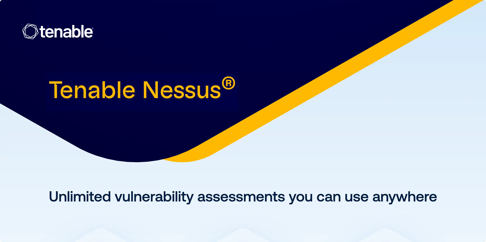

请访问原文链接：Tenable Nessus 10.12.4 (macOS, Linux, Windows) - 漏洞评估解决方案 查看最新版。原创作品，转载请保留出处。
作者主页：sysin.org

Nessus Vulnerability Scanner
漏洞评估领域的全球黄金标准，针对现代攻击面量身打造。
利用业界最受信赖的漏洞评估解决方案来评估现代攻击面。扩展到传统的 IT 资产之外 — 保护云基础设施和获取对与互联网相连的攻击面的可见性。
Nessus 版本
| Nessus Expert | Nessus Professional |
|---|---|
| 适用对象： | 适用对象： |
| 顾问、渗透测试人员、开发人员和中小型企业 | 顾问、渗透测试人员和安全专业人士 |
| - 不受限制的 IT 评估 | - 不受限制的 IT 评估 |
| - 使用不限地点 | - 使用不限地点 |
| - 配置评估 | - 配置评估 |
| - 实时检测结果 | - 实时检测结果 |
| - 配置报告 | - 配置报告 |
| - 社区支持 | - 社区支持 |
| - 高级支持（可选） | - 高级支持（可选） |
| - 提供随需培训 | - 提供随需培训 |
| - 外部攻击面扫描 | x |
| - 添加域的功能 | x |
| - 扫描云端基础架构 | x |
| - 500 个预构建的扫描策略 | x |
Nessus 在漏洞评估领域一路领先
从创立伊始，我们就与各类网络安全相关行业紧密协作。我们根据业界的反馈持续优化 Nessus，将其打造成市场中最准确全面的漏洞评估解决方案。20 年以来，我们不忘初心，始终专注于业界协作与产品创新 (sysin)，建立起最准确全面的漏洞数据库，让您的企业不会因忽视重要漏洞而暴露于风险之中。
今天，Nessus 深受全球数万家企业的信赖，是全球部署最为广泛的安全技术之一，而且是漏洞评估行业的黄金标准。
94K+ 个 CVE
226,000+ 款插件
100+ 款新插件，每周定期发布
Tenable 的零日研究对新漏洞和紧急漏洞提供全天候更新，因此您将始终具有全面的态势感知。
#1 准确度
Nessus 达到了 6 西格玛准确度*，实现了业内最低的误报率
*每 100 万次扫描中仅有 0.32 次误报
#1 覆盖面
Nessus 拥有业内首屈一指的漏洞覆盖面深度和广度
查看产品比较：https://www.tenable.com/nessus/competitive-comparison
#1 采用率
Nessus 深受数万家企业的信赖，全球下载次数达到 200 万次
#1 口碑信誉
口说无凭，无需赘言。为何全球安全专业人士对 Nessus 的信赖让您眼见为实
专业人士打造
Nessus 是基于对安全专业人士工作方式的深刻理解而从头开始打造的 (sysin)。Nessus 每个功能的设计都会让漏洞评估简单、轻松且直观。结果：花费更少的时间和工作量对问题进行评估、优先级分析和修复。在此详细了解这些功能。
在任何平台上部署
Nessus 可以部署在各种平台上，包括 Raspberry Pi。 不管您位于何处、要去往何方，或者您的环境有多分散，Nessus 都是完全可移植的。

高效和准确
动态编译的插件提高了扫描性能和效率 (sysin)，支持更快地完成首次扫描并实现价值。

获取面向互联网的攻击面的可见性
您不能保护您看不到的东西。在攻击者找到您之前，查找和评估与互联网连接的资产。

部署前保障云基础设施的安全
在软件开发生命周期 (SDLC) 中发现安全问题，要不就太迟了。

重点关注最重要的威胁
市场领先的覆盖范围，掌控每个漏洞。充分利用 Nessus 的强大功能，对最重要的威胁进行分类并加以解决。

预建策略和模板
超过 450 个预配置模板可帮助您快速了解哪里有漏洞 (sysin)。根据 CIS 基准和其他最佳实践轻松审核配置合规性。

可定制报告和故障排除
可自定义的报告功能可以进行优化以满足特定需求，并且可以采用最适合您安全流程的格式导出。

实时检测结果
Live Results 可在每一次插件更新时自动执行离线漏洞评估，根据您的扫描历史，为您揭示漏洞所在。您可以在这里轻松运行扫描来验证漏洞是否存在，从而加快问题的准确检测和优先分析的速度。

简单易用
Nessus 采用直观的导航方式和用户体验设计 (sysin)。这包括为您提供可操作提示的资源中心和所采取后续步骤的指导。

分组视图
相似的问题或漏洞类别将按组归类，并显示在同一条线索中，从而简化对问题修复的研究和优先排序。暂时屏蔽功能可以在指定时间内隐藏特定问题。从而您能够专注解决当务之急。

新增功能
Tenable Nessus 10.12.0 (2026-04-07)
✅ 新功能
以下是 Tenable Nessus 10.12.0 版本包含的新功能：
- 现代化的用户界面与新增功能： 您现在可以使用拖放功能，将列表中的一个现有扫描任务移动到 Tenable Nessus 内的文件夹或目录中。 您现在可以通过从本地计算机拖拽一个扫描文件（例如 .nessus 文件）并直接放入 Tenable Nessus 中来导入文件。
- 新增了对 OpenSSL 3.5 的支持。
- 新增了对 FIPS-140.3 的支持。
- 实施了多项更新，以确保正确使用免费版和付费版的 Tenable Nessus 产品。
- Tenable Nessus 现在可以通过 Sensor Proxy 连接到 Tenable Security Center 6.9.0 及更高版本。
- 在
nessuscli link命令中新增了--scan-zones参数，并在 Docker 运行命令中新增了SCAN_ZONES环境变量，用于将受管理的 Tenable Nessus 扫描器链接到 Tenable Security Center。
✅ 安全更新
以下是 Tenable Nessus 10.12.0 中包含的安全更新：
- 修复了一个漏洞，该漏洞曾允许拥有基本和标准权限的用户访问 Tenable Agent 错误报告下载端点。
✅ 错误修复
不在列出，详见笔者相关发布。
✅ 支持平台
以下是 Tenable Nessus 10.12.0 中进行的受支持平台更新：
- 新增对运行于 ARM64 架构的 Windows 环境的支持。
系统要求
Nessus 广泛支持各种 Unix、Linux 版本，也包括 Windows，下面列出的最广泛使用的 Unix、Linux 版本，作为推荐的运行平台。
macOS：
Linux：
Windows x64 系统：
下载地址
Nessus 10.0.0
- 百度网盘链接：
[EoD]
Nessus 10.1.0
- 百度网盘链接：
[EoD]
Nessus 10.2.0 All Platform
- 百度网盘链接：
[EoD]
Nessus 10.3.0 All Platform
- 百度网盘链接：
[EoD]
Nessus 10.4.0 All Platform
- 百度网盘链接：
[EoD] - 本次新增了 RHEL 7、8 aarch64 版本，以及 RHEL 9 x86_64 和 aarch64 版本，并废弃了部分旧版系统支持。
Nessus 10.5.0 All Platform
- 百度网盘链接：
[EoD] - 本次新增了 AlmaLinux 9 / Rocky Linux 9 x86_64 和 aarch64 版本，以及 Debian 11 的支持。不过还是缺少 FreeBSD 13 的版本。
Nessus 10.6.0 All Platform (Release Date: 2023-08-29) 文件列表 此版本支持 Report - HTML/CSV
- 百度网盘链接：
[EoD]- 过期可专享
Nessus 10.7.0 All Platform (Release Date: 2024-02-06)
- 百度网盘链接：
[EoD] - 新增 macOS Sonoma、Ubuntu 22.04 和 Debian 12 支持，不在支持 macOS Big Sur。
Nessus 10.7.5 All Platform (Release Date: 2024-07-16) 文件列表
- 百度网盘链接：
[EoD] - Ubuntu 24.04 正式支持，不在支持 RHEL 6、Debian 10、Ubuntu 14.04 和 FreeBSD。
Nessus 10.8.0 All Platform (Release Date: 2024-07-30) 文件列表
- 百度网盘链接：
[EoD] - Ubuntu 24.04 正式支持，不在支持 RHEL 6、Debian 10、Ubuntu 14.04 和 FreeBSD。
Nessus 10.8.5 All Platform (Release Date: 2025-06-30) 文件列表
- 百度网盘链接：
[EoD]- 过期可专享 - 此为 security updates 及 bug fix 版本，无新增功能，
Nessus 10.9.0 All Platform (Release Date: 2025-06-30) 文件列别
- 百度网盘链接：
[EoD]- 过期可专享 - 此版本新增 Windows Server 2025 支持。
Tenable Nessus 10.9.5 (2025-10-01) - Bug fix, Added support for macOS Tahoe.
- 百度网盘链接：
[EoD]- 过期可专享
Tenable Nessus 10.10.0 (2025-09-23)
- 百度网盘链接：
[EoD] - 现在可以支持 macOS Tahoe 和 RHEL 10 及其兼容发行版
Tenable Nessus 10.11.0（2025-11-17）
- 百度网盘链接：
[EoD] - 新的许可版本
Tenable Nessus 10.12.0（2026-04-07）
- 百度网盘链接：
[EoD]
Tenable Nessus 10.12.4（2026-08-19）
| Filename | Platform | Size | Release date |
|---|---|---|---|
| Unix | |||
| Deprecated | N/A | N/A | |
| Deprecated | N/A | N/A | |
| Nessus-10.12.4.dmg | macOS Universal (14, 15, 26) | 86.2 MB | 2026-08-19 |
| Linux | |||
| Deprecated | N/A | N/A | |
| Nessus-10.12.4-amzn2.aarch64.rpm | Amazon Linux 2 (Graviton 2) / Amazon Linux 2023 | 66.9 MB | 2026-08-19 |
| Nessus-10.12.4-amzn2.x86_64.rpm | Amazon Linux 2 / Amazon Linux 2023 | 67.1 MB | 2026-08-19 |
| Nessus-10.12.4-debian10_amd64.deb | Debian 11, 12 / Kali Linux 2020 AMD64 | 61.6 MB | 2026-08-19 |
| Deprecated | N/A | N/A | |
| Deprecated | N/A | N/A | |
| Deprecated | N/A | N/A | |
| Deprecated | N/A | N/A | |
| Nessus-10.12.4-el7.x86_64.rpm | Red Hat Enterprise Linux 7 (64-bit) / CentOS 7 / Oracle Linux 7 (including Unbreakable Enterprise Kernel) | 67.4 MB | 2026-08-19 |
| Nessus-10.12.4-el8.aarch64.rpm | Red Hat Enterprise Linux 8 (aarch64) / CentOS 8 / Oracle Linux 8 (including Unbreakable Enterprise Kernel) | 69.3 MB | 2026-08-19 |
| Nessus-10.12.4-el8.x86_64.rpm | Red Hat Enterprise Linux 8 (64-bit) / CentOS 8 / Oracle Linux 8 (including Unbreakable Enterprise Kernel) | 67.6 MB | 2026-08-19 |
| Nessus-10.12.4-el9.aarch64.rpm | Red Hat Enterprise Linux 9, 10 (aarch64) / CentOS Stream 9, 10 / Oracle Linux 9 (including Unbreakable Enterprise Kernel) | 68.2 MB | 2026-08-19 |
| Nessus-10.12.4-el9.x86_64.rpm | Red Hat Enterprise Linux 9, 10 (64-bit) / CentOS Stream 9, 10 / Oracle Linux 9 (including Unbreakable Enterprise Kernel) | 68.7 MB | 2026-08-19 |
| 10.9.3-fc38.x86_64.rpm | Fedora 38 - 39 (64-bit) | 69.8 MB | 2026-08-19 |
| Nessus-10.12.4-raspberrypios_armhf.deb | Raspberry Pi OS (32-bit) | 68 MB | 2026-08-19 |
| Deprecated | N/A | N/A | |
| Deprecated | N/A | N/A | |
| Nessus-10.12.4-suse12.x86_64.rpm | SUSE 12 Enterprise (64-bit) | 55.9 MB | 2026-08-19 |
| Nessus-10.12.4-suse15.x86_64.rpm | SUSE 15 Enterprise (64-bit) | 56.2 MB | 2026-08-19 |
| Nessus-10.12.4-ubuntu1604_amd64.deb | Ubuntu 16.04, 18.04, 20.04, 22.04, and 24.04 AMD64 | 61.2 MB | 2026-08-19 |
| Nessus-10.12.4-ubuntu1604_i386.deb | Ubuntu 16.04 i386 (32-bit) | 60.5 MB | 2026-08-19 |
| Nessus-10.12.4-ubuntu1804_aarch64.deb | Ubuntu 18.04, 20.04, 22.04, and 24.04 Aarch64 | 68.7 MB | 2026-08-19 |
| Windows | |||
| Deprecated | N/A | N/A | |
| Nessus-10.12.4-x64.msi | Windows Server 2012, Server 2012 R2, 10, 11, Server 2016, Server 2019, Server 2022, Server 2025 (64-bit) | 98 MB | 2026-08-19 |
| Nessus-10.12.4-arm64.msi | Windows 11 (ARM64) | 68.6 MB | 2026-08-19 |
Nessus Plugins（不定期更新：新版发布时或每月例行，或者新用户捐赠）
- 百度网盘链接：https://pan.baidu.com/s/19IVNmuEZN1sHthEpYqJhhw?pwd=<专享已公布>
- 通过捐赠下载插件更新：点击 💙支付宝 或者 💚微信支付，扫码备注邮箱（用于识别注册用户，忘记备注请提供时间），
评论区留言指定版本（默认当前最新版），在其他平台留言恕无法处理。 - 提示：捐赠或赞赏属于自愿赠予行为，提交后即表示您对作者的支持与认可。为避免误操作，请在确认前仔细检查金额，支付完成后将无法撤销或退还。
发布 Nessus 试用版自动化安装程序，支持 macOS Tahoe、RHEL 10、Ubuntu 24.04 和 Windows
- Nessus 10.12 Auto Installer for macOS Tahoe - Nessus 自动化安装程序 (updated Aug 2026)
- Nessus 10.12 Auto Installer for RHEL 9 | RHEL 10 - Nessus 自动化安装程序 (updated Aug 2026)
- Nessus 10.12 Auto Installer for Ubuntu 24.04 - Nessus 自动化安装程序 (updated Aug 2026)
- Nessus 10.12 Auto Installer for Windows - Nessus 自动化安装程序 (updated Aug 2026)
更多：HTTP 协议与安全

文章用于推荐和分享优秀的软件产品及其相关技术，所有软件提供免费版或试用版。内容若侵犯了您的版权，请联系作者删除。如果您喜欢这篇文章，或者觉得它对您有所帮助，亦或发现有不当之处；欢迎发表评论，也欢迎分享这个网站，或者赞赏一下，谢谢！提示：捐赠或赞赏属于自愿赠予行为，提交后即表示您对作者的支持与认可。为避免误操作，请在确认前仔细检查金额，支付完成后将无法撤销或退还。
 支付宝赞赏
支付宝赞赏  微信赞赏
微信赞赏赞赏一下
敬请注册！点击 “登录” - “用户注册”（已知不支持 21.cn/189.cn 邮箱）。 请勿使用联合登录（已关闭）。